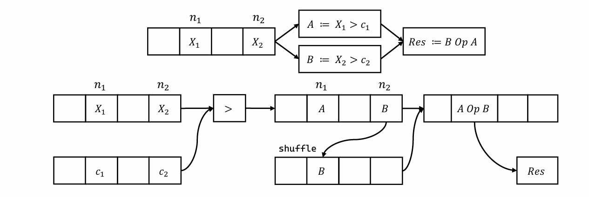

System Overview

Optimuzz is a directed compiler fuzzing framework that continuously validate the correctness of the compiler. Given a target optimization in the compiler, Optimuzz generates input programs to test the target optimization effectively. In Optimuzz, we propose the seed scheduler, the selective coverage, and the targeted mutator which significantly improve the fuzzing performance compared to the existing non-directed fuzzers. The generated programs are then checked with the translation validation tool such as Alive2. Optimuzz has detected miscompilation bugs in production compilers such as LLVM and TurboFan. The bugs are reported to the compiler developers and are getting fixed in the upstream.
Our Bug Reports
Our paper is appearing on PLDI 2025
The paper will discuss the mathematical formalization of our concept, detailed fuzzing techniques, and our experimental results.
We found a wrong approximation of Alive2
We are continously monitoring LLVM updates and testing them with Optimuzz. During our test, we found discrepancy of Alive2 and LLVM semantics for a floating-point operation, frem.
Detailed Look on a VectorCombine Bug
Let’s take a detailed look on a VectorCombine miscompilation bug, which is detected by Optimuzz.

We reported 55 miscomplation bugs in 2024
During our intensive investigation for nearly every optimization in LLVM, we reported 55 miscompilation cases to LLVM project.
© 2025 Optimuzz